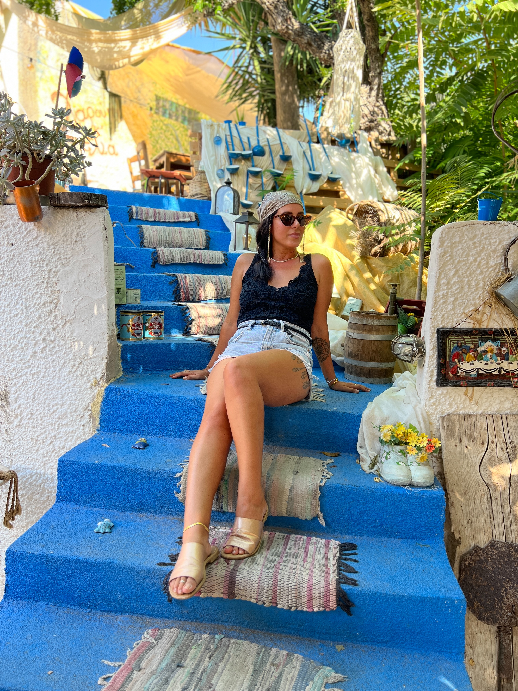

My Crete Story
In October of 2021, I moved to Crete. It was not planned. I just felt a quiet pull toward the island where my mother was born, and I followed it.
What started as a visit turned into almost 4 years of road trips down unmarked coastal roads, afternoons at beaches that cleansed and calmed my soul, and evenings in quaint villages that felt untouched by time. I fell for the food, the music, and the slower, fuller way of living that Crete offers if you let it.
About 6 months in I found my home. I renovated a perfectly small one bedroom condo, the same one I called home. Today I rent it out to fellow travellers who feel that same call to explore the island. You can find details @the.conscious.condo and DM for dates. Use the word "KALIMERA" in your message for special deals and discounts. With views of the sea, the city, the sunrise, and the sunset, it has become something of a sacred space.
Crete was the third country I called home, and the first time I lived full time in Europe. I was born in Toronto, Canada, lived for a while in Costa Rica, and these days call Spain home. But part of me is still on that island, in the place my mother's story began and mine took an unexpected turn.
This guide is a reflection of what I learned and loved along the way, and although it may have a long way to go to be proper full island guide, its filled with so many wonderful places to be nourished by this beautiful Island. I hope it leads you to your own sacred, soul filling journey in Crete.